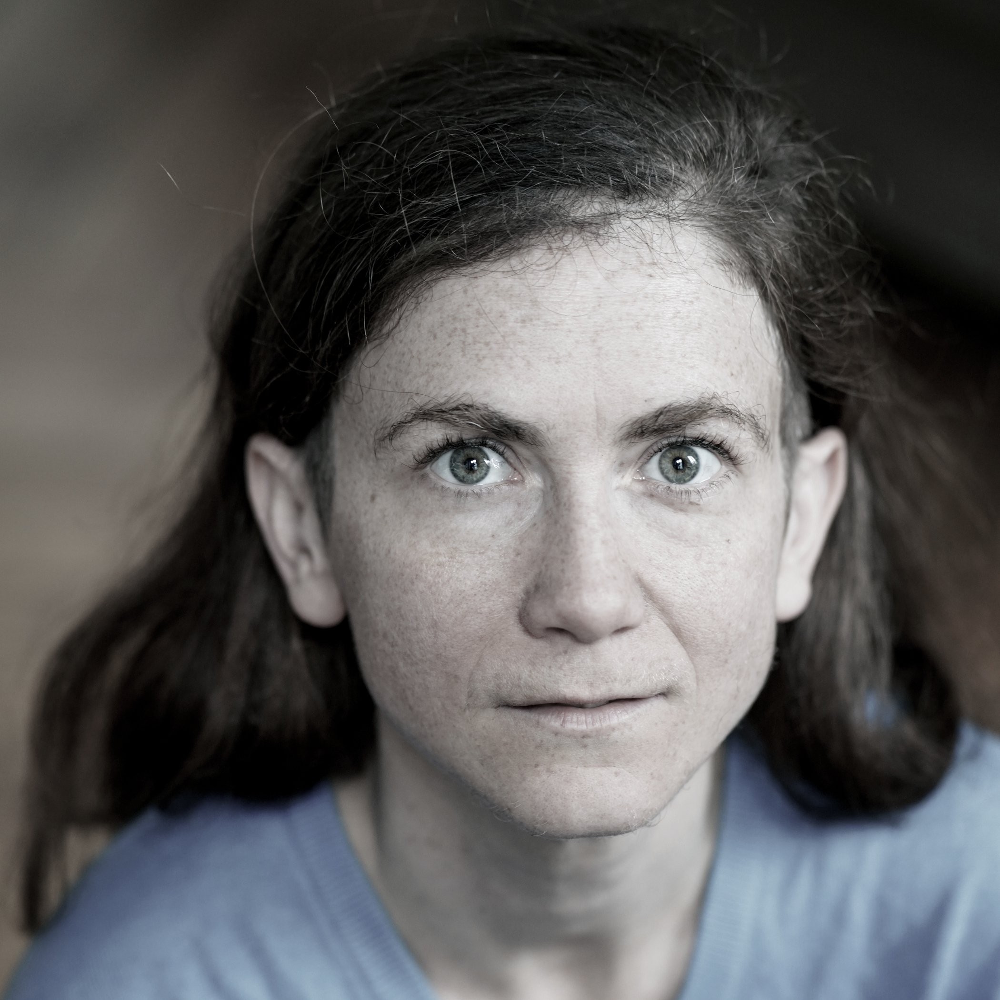

Sarah Brochart
est comédienne. Inspirée par le jeu burlesque, elle passe par l’humour pour aborder des sujets de fond. Formée au conservatoire
populaire d'art dramatique de la Scène sur Saône à Lyon, elle fait plusieurs stages de clown, avec notamment Heinzi Lorenzen et
Cédric Paga alias Ludor Citrik en octobre 2018. Elle joue son duo de clown, La fin du monde au Festival International des Arts
de la Rue d’Aurillac 2019, destiné à un public d'enfants, au sein de la compagnie La Rouquine. Orientée vers le tragi-comique,
elle écrit et met en scène sa pièce FLNJ, la Fofolle libération des nains de jardin qui sera jouée également à Aurillac. Avec
différentes casquettes, elle réalise des courts-métrages, dans les Kinos lyonnais.
Formée dans des associations d’éducation populaire, elle réalise différentes interventions auprès des lycéen.ne.s sur les
discriminations : avec l’association Virus 36 à Grenoble sur le sexisme et sur les discriminations ou encore l’association Rimbaud.
Elle propose des outils dynamiques tels que le débat mouvant, les groupes de parole, les jeux de rôle, le théâtre forum, le jeu de
la rivière, ainsi que la marche des privilèges, qui mettent en jeu le corps et suscitent l’engagement personnel.
Dans les années 2000, elle crée lors d’un stage de clown son solo La Grrrande conférence sur l’abolitionnisme du genre !
qu’elle reprend en 2016 avec la compagnie Dynamythe. Elle rejoint le LACSE en 2017 avec qui elle fait de nombreux spectacles
participatifs basés sur l'improvisation autour de sujets de société. Elle développe son spectacle pédagogique et burlesque sur le
genre à destination d’un public adolescent.
Engagée au sein de la Compagnie Lunée l’Ôtre depuis 2019, elle interprète plusieurs personnages de la pièce La Déferle.
